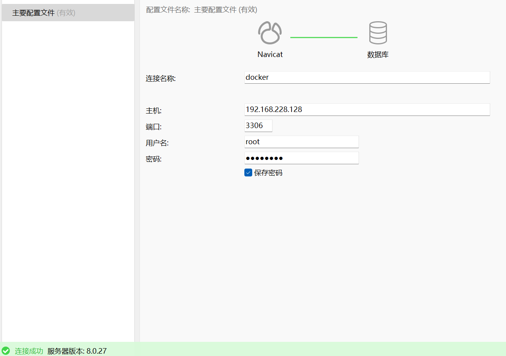
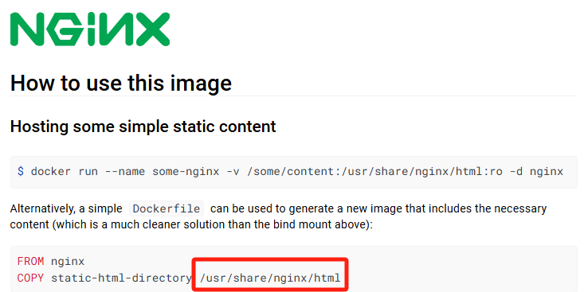
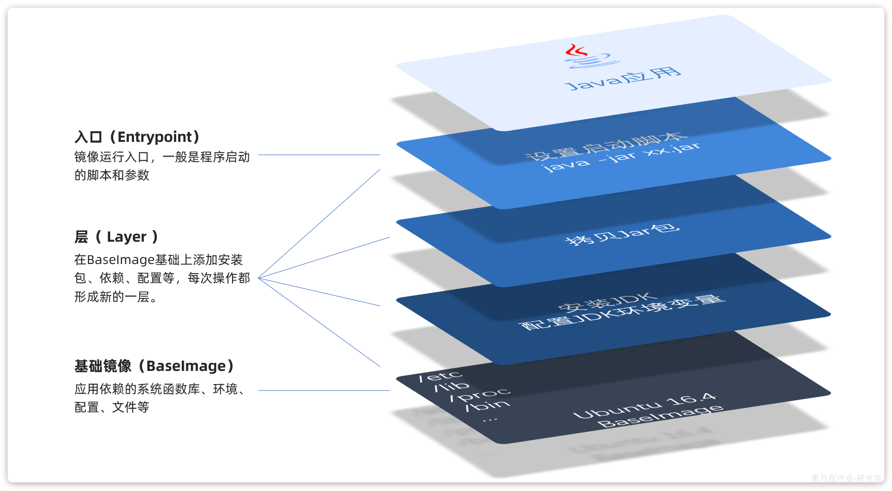

后端开发入门Docker：从基础到实践
Docker
Docker 是一个开源的容器化平台，它使开发人员能够在隔离的环境中构建、打包和部署应用程序。通过使用 Docker，应用程序可以在任何环境中运行，而不必担心底层硬件或操作系统的差异。
虽然我们学习的主要是后端开发，但了解 Docker 及其相关工具可以帮助开发人员更好地理解 DevOps 流程，提高整体技术素养和职业竞争力。当然，我们不是运维，并不会全部都学到。
Docker的好处
Docker 是一种开源的容器化平台，它能够显著简化软件开发、部署和运行过程中的许多方面。
- 环境一致性：
- Docker 容器提供了一致的运行环境，不管在开发、测试还是生产环境中，都能保证应用程序的运行一致性，减少了“在我机器上可以工作”的问题。
- 依赖管理：
- Docker 容器包含了应用程序运行所需的所有依赖项（例如库、工具和配置文件），使得依赖管理变得简单和可靠。
- 快速部署：
- 通过使用 Docker 镜像，可以快速地在不同的环境中部署应用程序。镜像是可移植的，确保了快速启动和部署过程的一致性。
- 资源隔离：
- Docker 容器提供了轻量级的资源隔离机制，确保不同的应用程序或服务在独立的容器中运行，减少了资源冲突和相互影响。
- 版本控制：
- Docker 镜像可以像代码一样进行版本控制，方便管理和回滚到之前的版本。这有助于快速恢复和测试不同的应用版本。
- 扩展性和可伸缩性：
- 使用 Docker，可以轻松地扩展应用程序。通过编排工具如 Docker Compose 或 Kubernetes，可以实现容器的自动扩展和管理。
- 持续集成和持续部署（CI/CD）：
- Docker 与 CI/CD 工具集成，可以实现自动化的构建、测试和部署流程，提升开发效率和代码质量。
- 开发效率：
- 开发人员可以在本地快速搭建和测试完整的开发环境，而不需要担心环境配置问题，从而提高开发效率。
前置准备
首先你得有一台Linux操作系统，可以是虚拟机上的，也可以是云服务器上的，我在这里就简单使用我的虚拟机里面的CentOS 7。
其次你总得有个终端软件吧，用命令操作Linux系统，推荐我正在使用的Tabby，没有的可以看我另外一篇博客安装Tabby：一款出色的开源终端工具 | Panda)
最后就是一些Linux命令的使用，不会再查就好咯
对了，还有一颗好学的心
Docker安装
卸载旧版
首先如果系统中已经存在旧的Docker，则先卸载：
1 | yum remove docker \ |
配置Docker的yum库
首先要安装一个yum工具
1 | sudo yum install -y yum-utils device-mapper-persistent-data lvm2 |
安装成功后，执行命令，配置Docker的yum源（已更新为阿里云源）：
1 | sudo yum-config-manager --add-repo https://mirrors.aliyun.com/docker-ce/linux/centos/docker-ce.repo |
更新yum，建立缓存
1 | sudo yum makecache fast |
安装Docker
最后，执行命令，安装Docker，静待下载，当看到Complete! 说明就安装好了
1 | yum install -y docker-ce docker-ce-cli containerd.io docker-buildx-plugin docker-compose-plugin |
启动和校验
1 | # 启动Docker |
启动Docker后运行systemctl status docker看到active(running)证明启动成功

配置镜像加速
这里以阿里云镜像加速为例。
注册阿里云账号
首先访问阿里云https://www.aliyun.com注册一个账号。
开通镜像服务
在首页的产品中，找到阿里云的容器镜像服务：

点击后进入管理控制台：

配置镜像加速
找到镜像工具下的镜像加速器，选择好对应的系统，直接复制下端命令去终端运行

Docker基础
安装成功后，接下来，我们一起来学习Docker使用的一些基础知识，为将来独立部署项目打下基础。
查找配置
在Docker Hub Container Image Library | App Containerization上可以查找想要安装的软件，可以看到很全的信息，包含了很多配置信息，要善于去Hub中查信息


Docker命令
查阅命令可以到Use the Docker command line | Docker Docs官网查询
常见命令
加粗的是我觉得比较常用的，方便回来查找
| 命令 | 说明 | 文档地址 |
|---|---|---|
| docker pull | 拉取镜像 | docker pull |
| docker push | 推送镜像到DockerRegistry | docker push |
| docker images | 查看本地镜像 | docker images |
| docker rmi | 删除本地镜像 | docker rmi |
| docker run | 创建并运行容器（不能重复创建） | docker run |
| docker stop | 停止指定容器 | docker stop |
| docker start | 启动指定容器 | docker start |
| docker restart | 重新启动容器 | docker restart |
| docker rm | 删除指定容器 | docs.docker.com |
| docker ps | 查看容器 | docker ps |
| docker logs | 查看容器运行日志 | docker logs |
| docker exec | 进入容器 | docker exec |
| docker save | 保存镜像到本地压缩文件 | docker save |
| docker load | 加载本地压缩文件到镜像 | docker load |
| docker inspect | 查看容器详细信息 | docker inspect |
用图来说明他们之间的关系，别担心，我们会慢慢学习
特别注意：通过镜像来创建容器
- 镜像：英文是image
- 容器：英文是container
- 仓库：当创建容器的时候，本地没有想要的镜像，就会到镜像仓库中下载。像Maven一样，DockerHub网站是官方仓库，阿里云、华为云会提供一些第三方仓库，我们也可以自己搭建私有的镜像仓库。

命令演示与快速上手
我们简单地通过Docker来安装一个MySQL，来体验Docker安装MySQL的快捷
- 使用
docker pull拉取MySQL镜像（目前本地是没有的，所以需要从云仓库中拉取）
1 | docker pull mysql |

因为我们没有指定版本，默认是拉取latest版本，如果需要版本可以在名字后加上:[tag],tag为版本号
- 使用
docker images查看本地有的镜像，可以看到有刚才拉取的镜像

- 使用
docker run命令创建容器。注意：没有pull拉取镜像也可运行该命令，会自动下载镜像（在第一步我们手动pull了，所以会简短创建容器的时间，不到一秒即可创建成功）
1 | docker run -d \ |
解读：
docker run -d：创建并运行一个容器，-d则是让容器以后台进程运行--name mysql: 给容器起个名字叫mysql，可以自定义-p 3306:3306: 设置端口映射。
- 容器是隔离环境，外界不可访问。但是可以将宿主机端口映射容器内的端口，当访问宿主机指定端口时，就是在访问容器内的端口了。
- 容器内端口往往是由容器内的进程决定，例如MySQL进程默认端口是3306，因此容器内端口一定是3306；而宿主机端口则可以任意指定，一般与容器内保持一致。
- 格式：
-p 宿主机端口:容器内端口，示例中就是将宿主机的3306映射到容器内的3306端口-eTZ=Asia/Shanghai` : 配置容器内进程运行时的一些参数
- 格式：
-e KEY=VALUE，KEY和VALUE都由容器内进程决定- 案例中，
TZ=Asia/Shanghai是设置时区；MYSQL_ROOT_PASSWORD=123456是设置MySQL默认密码mysql: 设置镜像名称，Docker会根据这个名字搜索并下载镜像（不可自定义，必须是厂商起的名字）
- 格式：
REPOSITORY:TAG，例如mysql:8.0，其中REPOSITORY可以理解为镜像名，TAG是版本号- 在未指定
TAG的情况下，默认是最新版本，也就是mysql:latest

返回的67d27537ef58131225d158465ed90da0f054c4c44bd8e824a3e5cc8c78f71c65用于唯一标识该容器
docker create与docker run相同，只不过create后不会帮你启动，run相当于create+run，docker ps查看正在运行的容器，docker ps -a查看所有容器

- CONTAINER ID：容器id
- IMAGE：创建容器使用的镜像
- COMMAND：表示容器最后运行的命令
- CREATED：创建时间
- STATUS：容器的状态。可能是启动时间也可能是关闭时间
- PORTS：容器对外开放的端口
- NAMES：容器的名字，自定义的那个
这个时候MySQL已经安装成功，并且按照我们设定的配置好了，所以打开Navicat，我们即可连接上MySQL，是不是比传统方式安装快了很多，只需要一个docker run。
如果连接不上可以查看端口3306是否开放或者3306端口是否被占用（如果你原装了MySQL并且正在运行）
firewall-cmd --zone=public --add-port=3306/tcp --permanent可以开放3306端口，然后使用systemctl restart firewalld重启防火墙即可
docker inspect查看容器详细信息，会出现很多信息，包括配置参数、网络设置、挂载卷、环境变量等
1 | docker inspect mysql |

docker exec用于进入容器内部执行操作，例如以下命令，可以直接到容器内部并且连接MySQL
-it参数用于在容器中启动一个交互式终端
1 | docker exec -it mysql mysql -uroot -p |

docker rm删除容器，容器正在运行不可删除，这时我们可以先docker stop该容器或者force remove

docker rm -f强制删除容器，会返回容器名字代表删除成功，使用docker ps查看容器为空

docker rmi删除镜像（不是容器，多了i表示images），使用docker images为空

- 加载和保存自己本地的镜像包
- 通过SFTP上传
tar压缩包到虚拟机

- 使用
docker load -i file_name命令即可加载镜像

- 使用
docker save -o file_name images_name保存本地镜像为tar包

到这里你就已经体验完了Docker的快速入门，只需要记好命令即可
数据卷
容器是隔离环境，容器内程序的文件、配置、运行时产生的容器都在容器内部，我们要读写容器内的文件非常不方便。因此，容器提供程序的运行环境，但是程序运行产生的数据、程序运行依赖的配置都应该与容器解耦。
什么是数据卷
简单来说数据卷（volume）是一个虚拟目录，是容器内目录与宿主机目录之间映射的桥梁，通过这个桥梁，把容器和宿主机的文件互通，这样放在我们Linux系统上面的文件，能被容器内部找到，本质上是同个文件，主机和容器之间的文件是共享的。
使用Docker卷时，Docker会在宿主机上创建一个指定目录，并将其挂载到容器内。这种情况下，容器和主机之间的数据是共享的，修改一个地方的文件会在另一个地方反映出来，这样我们就可以只操作系统的文件而不用去到容器内部操作。
数据卷命令
数据卷的相关命令有：
| 命令 | 说明 | 文档地址 |
|---|---|---|
| docker volume create | 创建数据卷 | docker volume create |
| docker volume ls | 查看所有数据卷 | docs.docker.com |
| docker volume rm | 删除指定数据卷 | docs.docker.com |
| docker volume inspect | 查看某个数据卷的详情 | docs.docker.com |
| docker volume prune | 清除数据卷 | docker volume prune |
注意：容器与数据卷的挂载要在创建容器时配置，对于创建好的容器，是不能设置数据卷的。而且创建容器的过程中，数据卷会自动创建。
通过docker inspect查看MySQL容器的信息

可以发现，其中有几个关键属性：
- Name：数据卷名称。由于定义容器未设置容器名，这里的就是匿名卷自动生成的名字，一串hash值。
- Source：宿主机目录
- Destination : 容器内的目录
因为我们没有显示地定义数据卷，所以他是一个匿名数据卷。
挂载到数据卷（Docker管理）
通过-v 数据卷名:容器中的目录在创建容器时实现挂载
到Hub上查看想要挂载的目录在容器中的位置
1 | 1.首先创建容器并指定数据卷，注意通过 -v 参数来指定数据卷 |

/var/lib/docker/volumes这个目录就是默认的存放所有容器数据卷的目录，其下再根据数据卷名称创建新目录，格式为/数据卷名/_data。所以挂载到的目录为/var/lib/docker/volumes/html/_data。这种是把目录挂载到数据卷上。
挂载本地目录（用户管理）
正常情况下，我们可能需要明确指定将宿主机的一个目录挂载到容器中，比如Nginx的html文件夹
注意：每一个不同的镜像，将来创建容器后内部有哪些目录可以挂载，可以参考DockerHub对应的页面
例如Nginx的html在容器中的目录路径为/usr/share/nginx/html，我们希望他挂载到我们本地的./nginx/html文件夹而不是默认创建的/var/lib/docker/volumes/html/_data
那么我们在创建容器的时候就可以直接指定-v 本地目录：容器中目录或-v 本地文件:容器内文件
注意：本地目录或文件必须以 / 或 ./开头，如果直接以名字开头，会被识别为数据卷名而非本地目录名。
这个时候我们由于挂载的是本地目录，所以我们要自己准备好html这个本地文件夹中的内容，保证容器能够访问到里面的页面
在index.html中我加多了一行<h2>My name is Pandali!</h2>
我们手动上传文件，然后运行命令
1 | docker run -d --name nginx -p 80:80 -v ./nginx/html:/usr/share/nginx/html nginx |
在浏览器中访问nginx，可以看到我们传上去的自定义后的html

挂载到本地目录的方法适合我们需要根据自己的需要来自定义初始化，或者配置参数，而不是使用厂商自带的初始化和配置
又或者我们使用MySQL来挂载本地
我们提前将conf文件和我们想要的sql文件复制到Linux系统当中

运行以下命令，具体的目录绑定可以到Hub中查询，完成三个目录的绑定
1 | docker run -d \ |
运行之后可以才看到新创建的MySQL以及包含了我们想要的数据库文件

这样只要本地的目录不被删除，无论MySQL升级还是被重装，只要绑定了这个目录，数据就一直存在，我们也可以这样对其进行初始化
总结
挂载数据卷
当你挂载一个Docker数据卷时，Docker会在主机上创建一个目录用于存储数据卷的内容。如果你在运行容器时挂载了一个数据卷，那么你对这个卷所做的更改会持久化，并且这个卷可以在不同的容器之间共享。
挂载本地目录
当你挂载本地的一个目录到容器中时，你需要在本地目录中提前准备好文件，这样容器启动时就可以访问这些文件。否则，容器启动时会发现挂载目录为空。
区别总结
- 数据卷：由Docker管理，用于持久化和共享数据。在创建数据卷时，如果数据卷是空的，容器中的初始内容不会自动复制到卷中。需要在容器运行时或之后在容器内部添加内容。
- 本地目录挂载：由用户管理，需要用户提前准备好内容。容器会使用本地目录中的文件和目录，任何修改会反映在本地目录中。
网络
在学校，我们连接了校园网的电脑可以互通，处在一个局域网中，Docker也很类似
当我们部署了后端服务，想要访问MySQL，就必须使他们的容器处在同一个网关下。
常见命令
| 命令 | 说明 | 文档地址 |
|---|---|---|
| docker network create | 创建一个网络 | docker network create |
| docker network ls | 查看所有网络 | docs.docker.com |
| docker network rm | 删除指定网络 | docs.docker.com |
| docker network prune | 清除未使用的网络 | docs.docker.com |
| docker network connect | 使指定容器连接加入某网络 | docs.docker.com |
| docker network disconnect | 使指定容器连接离开某网络 | docker network disconnect |
| docker network inspect | 查看网络详细信息 | docker network inspect |
两种常见的网络模式
除了默认网络桥接和用户自定义桥接网络，还有主机网络 (Host Network)、容器网络 (Container Network)、覆盖网络 (Overlay Network)等等，读者可以根据自己需要进行学习
通过docker network ls可以查看docker默认已有的网络

- bridge 网络：默认创建的网络类型，当你不指定网络类型时，Docker 容器会自动连接到 bridge 网络。
- host 网络：在这种模式下，容器不会有独立的网络命名空间，直接使用宿主机的网络堆栈。
- none 网络：这种模式下，容器没有任何网络连接，相当于禁用了网络功能。
默认网络桥接 (Bridge Network)
- 默认情况下，当 Docker 守护进程启动时，会创建一个名为
bridge的默认网络。这种网络允许同一主机上的所有容器通过 IP 地址互相通信。 - 可以通过
--network bridge参数在启动容器时连接到这个默认桥接网络。
我们通过docker inspect mysql和docker inspect nginx来查看他们现在的网络，我们在创建容器时并没有设定，所以是默认
他们处于bridge默认网络中，有着共同的网关172.17.0.1，可以进行容器间的访问
用户定义的桥接网络 (User-Defined Bridge Network)
- 用户可以创建自定义桥接网络，通过
docker network create <network-name>命令来实现。 - 在这个自定义网络中，容器可以通过容器名称进行互相通信，而不仅仅是通过 IP 地址。
我们可以通过-l来对加入网络的容器起别名，方便访问（不起别名默认为容器名）
1 | 创建一个junwei网络 |
可以看到两个容器处于同个网络当中

镜像
镜像就是包含了应用程序、程序运行的系统函数库、运行配置等文件的文件包。构建镜像的过程是把他们打包起来。
镜像之所以能让我们快速跨操作系统部署应用而忽略其运行环境、配置，就是因为镜像中包含了程序运行需要的系统函数库、环境、配置、依赖。

镜像就是一堆文件的集合。
但是，镜像文件不是随意堆放的，而是按照操作的步骤分层叠加而成，每一层形成的文件都会单独打包并标记一个唯一id，称为Layer（层）。这样，如果我们构建时用到的某些层其他人已经制作过，就可以直接拷贝使用这些层，而不用重复制作。
Dockerfile
由于制作镜像的过程中，需要逐层处理和打包，比较复杂，所以Docker就提供了自动打包镜像的功能。我们只需要将打包的过程，每一层要做的事情用固定的语法写下来，交给Docker去执行即可。
而这种记录镜像结构的文件就称为Dockerfile，其对应的语法可以参考官方文档：
https://docs.docker.com/engine/reference/builder/
其中的语法比较多，比较常用的有：
| 指令 | 说明 | 示例 |
|---|---|---|
| FROM | 指定基础镜像 | FROM centos:6 |
| ENV | 设置环境变量，可在后面指令使用 | ENV key value |
| COPY | 拷贝本地文件到镜像的指定目录 | COPY ./xx.jar /tmp/app.jar |
| RUN | 执行Linux的shell命令，一般是安装过程的命令 | RUN yum install gcc |
| EXPOSE | 指定容器运行时监听的端口，是给镜像使用者看的 | EXPOSE 8080 |
| ENTRYPOINT | 镜像中应用的启动命令，容器运行时调用 | ENTRYPOINT java -jar xx.jar |
在别人构建好的jdk镜像的基础上制作java镜像，就可以省去JDK的配置了，方便很多，下面就是一个Dockerfile的例子
1 | # 基础镜像 |
自定义镜像
当Dockerfile文件（记住得叫这个名字，让Docker识别）写好以后，将Dockerfile文件和Jar包放在同个目录下，就可以利用命令来构建镜像了
执行命令，构建镜像：
1 | # 进入镜像目录 |
命令说明：
docker build: 就是构建一个docker镜像-t your_jar_package_name:1.0：-t参数是指定镜像的名称（repository和tag）.: 最后的点是指构建时Dockerfile所在路径，由于我们进入了demo目录，所以指定的是.代表当前目录，也可以直接指定Dockerfile目录：1
2# 直接指定Dockerfile目录
docker build -t your_jar_package_name:1.0 /root/demo
这样我们就可以创建一个属于我们的镜像了，使用docker run即可将他启动起来
DockerCompose
如果我们要部署一个简单的java项目，其中包含3个容器：
- MySQL
- Nginx
- Java项目(Jar)
而稍微复杂的项目，其中还会有各种各样的其它中间件，如Redis等，需要部署的东西远不止3个。如果还像之前那样手动的逐一部署，就太麻烦了。
docker-compose.yml文件中可以定义多个相互关联的应用容器，每一个应用容器被称为一个服务（service）。由于service就是在定义某个应用的运行时参数，因此与docker run参数非常相似。
举例来说，用docker run部署MySQL的命令如下：
1 | docker run -d \ |
如果用docker-compose.yml文件来定义，就是这样：
1 | version: "3.8" |
对比如下：
| docker run 参数 | docker compose 指令 | 说明 |
|---|---|---|
| –name | container_name | 容器名称 |
| -p | ports | 端口映射 |
| -e | environment | 环境变量 |
| -v | volumes | 数据卷配置 |
| –network | networks | 网络 |
基础命令
编写好docker-compose.yml文件，就可以部署项目了。常见的命令：https://docs.docker.com/compose/reference/
基本语法如下：
1 | docker compose [OPTIONS] [COMMAND] |
其中，OPTIONS和COMMAND都是可选参数，比较常见的有：
| 类型 | 参数或指令 | 说明 |
|---|---|---|
| Options | -f | 指定compose文件的路径和名称 |
| -p | 指定project名称。project就是当前compose文件中设置的多个service的集合，是逻辑概念 | |
| Commands | up | 创建并启动所有service容器 |
| down | 停止并移除所有容器、网络 | |
| ps | 列出所有启动的容器 | |
| logs | 查看指定容器的日志 | |
| stop | 停止容器 | |
| start | 启动容器 | |
| restart | 重启容器 | |
| top | 查看运行的进程 | |
| exec | 在指定的运行中容器中执行命令 |
利用docker-compose.yml实现多个容器的一键部署我们下一章单独讲
双 手 合 十 成 为 自 己 的 神
自 己 所 信 念 的 即 是 信 仰

微 信 号 ： L I J J J W E I
Q Q 号 ： 2 8 4 8 5 2 7 4 8 5